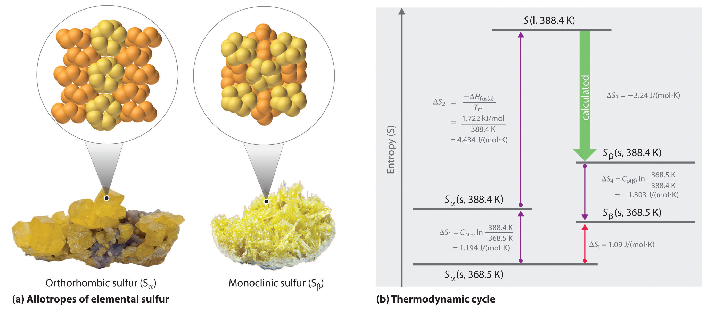

The atoms, molecules, or ions that compose a chemical system can undergo several types of molecular motion, including translation, rotation, and vibration (Figure 18.13 "Molecular Motions"). The greater the molecular motion of a system, the greater the number of possible microstates and the higher the entropy. A perfectly ordered system with only a single microstate available to it would have an entropy of zero. The only system that meets this criterion is a perfect crystal at a temperature of absolute zero (0 K), in which each component atom, molecule, or ion is fixed in place within a crystal lattice and exhibits no motion. Such a state of perfect order (or, conversely, zero disorder) corresponds to zero entropy. In practice, absolute zero is an ideal temperature that is unobtainable, and a perfect single crystal is also an ideal that cannot be achieved. Nonetheless, the combination of these two ideals constitutes the basis for the third law of thermodynamicsThe entropy of any perfectly ordered, crystalline substance at absolute zero is zero.: the entropy of any perfectly ordered, crystalline substance at absolute zero is zero.
Figure 18.13 Molecular Motions

Vibrational, rotational, and translational motions of a carbon dioxide molecule are illustrated here. Only a perfectly ordered, crystalline substance at absolute zero would exhibit no molecular motion and have zero entropy. In practice, this is an unattainable ideal.
The third law of thermodynamics has two important consequences: it defines the sign of the entropy of any substance at temperatures above absolute zero as positive, and it provides a fixed reference point that allows us to measure the absolute entropy of any substance at any temperature.In practice, chemists determine the absolute entropy of a substance by measuring the molar heat capacity (Cp) as a function of temperature and then plotting the quantity Cp/T versus T. The area under the curve between 0 K and any temperature T is the absolute entropy of the substance at T. In contrast, other thermodynamic properties, such as internal energy and enthalpy, can be evaluated in only relative terms, not absolute terms. In this section, we examine two different ways to calculate ΔS for a reaction or a physical change. The first, based on the definition of absolute entropy provided by the third law of thermodynamics, uses tabulated values of absolute entropies of substances. The second, based on the fact that entropy is a state function, uses a thermodynamic cycle similar to those we first encountered in Chapter 5 "Energy Changes in Chemical Reactions".
One way of calculating ΔS for a reaction is to use tabulated values of the standard molar entropy (S°)The entropy of 1 mol of a substance at a standard temperature of 298 K., which is the entropy of 1 mol of a substance at a standard temperature of 298 K; the units of S° are J/(mol·K). Unlike enthalpy or internal energy, it is possible to obtain absolute entropy values by measuring the entropy change that occurs between the reference point of 0 K [corresponding to S = 0 J/(mol·K)] and 298 K.
As shown in Table 18.1 "Standard Molar Entropy Values of Selected Substances at 25°C", for substances with approximately the same molar mass and number of atoms, S° values fall in the order S°(gas) > S°(liquid) > S°(solid). For instance, S° for liquid water is 70.0 J/(mol·K), whereas S° for water vapor is 188.8 J/(mol·K). Likewise, S° is 260.7 J/(mol·K) for gaseous I2 and 116.1 J/(mol·K) for solid I2. This order makes qualitative sense based on the kinds and extents of motion available to atoms and molecules in the three phases. The correlation between physical state and absolute entropy is illustrated in Figure 18.14 "A Generalized Plot of Entropy versus Temperature for a Single Substance", which is a generalized plot of the entropy of a substance versus temperature.
Table 18.1 Standard Molar Entropy Values of Selected Substances at 25°C
| Substance | S° [J/(mol·K)] |
|---|---|
| Gases | |
| He | 126.2 |
| H2 | 130.7 |
| Ne | 146.3 |
| Ar | 154.8 |
| Kr | 164.1 |
| Xe | 169.7 |
| H2O | 188.8 |
| N2 | 191.6 |
| O2 | 205.2 |
| CO2 | 213.8 |
| I2 | 260.7 |
| Liquids | |
| H2O | 70.0 |
| CH3OH | 126.8 |
| Br2 | 152.2 |
| CH3CH2OH | 160.7 |
| C6H6 | 173.4 |
| CH3COCl | 200.8 |
| C6H12 (cyclohexane) | 204.4 |
| C8H18 (isooctane) | 329.3 |
| Solids | |
| C (diamond) | 2.4 |
| C (graphite) | 5.7 |
| LiF | 35.7 |
| SiO2 (quartz) | 41.5 |
| Ca | 41.6 |
| Na | 51.3 |
| MgF2 | 57.2 |
| K | 64.7 |
| NaCl | 72.1 |
| KCl | 82.6 |
| I2 | 116.1 |
Figure 18.14 A Generalized Plot of Entropy versus Temperature for a Single Substance

Absolute entropy increases steadily with increasing temperature until the melting point is reached, where it jumps suddenly as the substance undergoes a phase change from a highly ordered solid to a disordered liquid (ΔSfus). The entropy again increases steadily with increasing temperature until the boiling point is reached, where it jumps suddenly as the liquid undergoes a phase change to a highly disordered gas (ΔSvap).
A closer examination of Table 18.1 "Standard Molar Entropy Values of Selected Substances at 25°C" also reveals that substances with similar molecular structures tend to have similar S° values. Among crystalline materials, those with the lowest entropies tend to be rigid crystals composed of small atoms linked by strong, highly directional bonds, such as diamond [S° = 2.4 J/(mol·K)]. In contrast, graphite, the softer, less rigid allotrope of carbon, has a higher S° [5.7 J/(mol·K)] due to more disorder in the crystal. Soft crystalline substances and those with larger atoms tend to have higher entropies because of increased molecular motion and disorder. Similarly, the absolute entropy of a substance tends to increase with increasing molecular complexity because the number of available microstates increases with molecular complexity. For example, compare the S° values for CH3OH(l) and CH3CH2OH(l). Finally, substances with strong hydrogen bonds have lower values of S°, which reflects a more ordered structure.
To calculate ΔS° for a chemical reaction from standard molar entropies, we use the familiar “products minus reactants” rule, in which the absolute entropy of each reactant and product is multiplied by its stoichiometric coefficient in the balanced chemical equation. Example 7 illustrates this procedure for the combustion of the liquid hydrocarbon isooctane (C8H18; 2,2,4-trimethylpentane).
Use the data in Table 18.1 "Standard Molar Entropy Values of Selected Substances at 25°C" to calculate ΔS° for the reaction of liquid isooctane with O2(g) to give CO2(g) and H2O(g) at 298 K.
Given: standard molar entropies, reactants, and products
Asked for: ΔS°
Strategy:
Write the balanced chemical equation for the reaction and identify the appropriate quantities in Table 18.1 "Standard Molar Entropy Values of Selected Substances at 25°C". Subtract the sum of the absolute entropies of the reactants from the sum of the absolute entropies of the products, each multiplied by their appropriate stoichiometric coefficients, to obtain ΔS° for the reaction.
Solution:
The balanced chemical equation for the complete combustion of isooctane (C8H18) is as follows:
We calculate ΔS° for the reaction using the “products minus reactants” rule, where m and n are the stoichiometric coefficients of each product and each reactant:
ΔS° is positive, as expected for a combustion reaction in which one large hydrocarbon molecule is converted to many molecules of gaseous products.
Exercise
Use the data in Table 18.1 "Standard Molar Entropy Values of Selected Substances at 25°C" to calculate ΔS° for the reaction of H2(g) with liquid benzene (C6H6) to give cyclohexane (C6H12).
Answer: −361.1 J/K
Entropy increases with softer, less rigid solids, solids that contain larger atoms, and solids with complex molecular structures.
ΔS° for a reaction can be calculated from absolute entropy values using the same “products minus reactants” rule used to calculate ΔH°.
We can also calculate a change in entropy using a thermodynamic cycle. As you learned in Chapter 5 "Energy Changes in Chemical Reactions", the molar heat capacity (Cp) is the amount of heat needed to raise the temperature of 1 mol of a substance by 1°C at constant pressure. Similarly, Cv is the amount of heat needed to raise the temperature of 1 mol of a substance by 1°C at constant volume. The increase in entropy with increasing temperature in Figure 18.14 "A Generalized Plot of Entropy versus Temperature for a Single Substance" is approximately proportional to the heat capacity of the substance.
Recall that the entropy change (ΔS) is related to heat flow (qrev) by ΔS = qrev/T. Because qrev = nCpΔT at constant pressure or nCvΔT at constant volume, where n is the number of moles of substance present, the change in entropy for a substance whose temperature changes from T1 to T2 is as follows:
As you will discover in more advanced math courses than is required here, it can be shown that this is equal to the following:For a review of natural logarithms, see Essential Skills 6 in Chapter 11 "Liquids".
Equation 18.20
Similarly,
Equation 18.21
Thus we can use a combination of heat capacity measurements (Equation 18.20 or Equation 18.21) and experimentally measured values of enthalpies of fusion or vaporization if a phase change is involved (Equation 18.18) to calculate the entropy change corresponding to a change in the temperature of a sample.
We can use a thermodynamic cycle to calculate the entropy change when the phase change for a substance such as sulfur cannot be measured directly. As noted in the exercise in Example 6, elemental sulfur exists in two forms (part (a) in Figure 18.15 "Two Forms of Elemental Sulfur and a Thermodynamic Cycle Showing the Transition from One to the Other"): an orthorhombic form with a highly ordered structure (Sα) and a less-ordered monoclinic form (Sβ). The orthorhombic (α) form is more stable at room temperature but undergoes a phase transition to the monoclinic (β) form at temperatures greater than 95.3°C (368.5 K). The transition from Sα to Sβ can be described by the thermodynamic cycle shown in part (b) in Figure 18.15 "Two Forms of Elemental Sulfur and a Thermodynamic Cycle Showing the Transition from One to the Other", in which liquid sulfur is an intermediate. The change in entropy that accompanies the conversion of liquid sulfur to Sβ (−ΔSfus(β) = ΔS3 in the cycle) cannot be measured directly. Because entropy is a state function, however, ΔS3 can be calculated from the overall entropy change (ΔSt) for the Sα–Sβ transition, which equals the sum of the ΔS values for the steps in the thermodynamic cycle, using Equation 18.20 and tabulated thermodynamic parameters (the heat capacities of Sα and Sβ, ΔHfus(α), and the melting point of Sα.)
Figure 18.15 Two Forms of Elemental Sulfur and a Thermodynamic Cycle Showing the Transition from One to the Other
(a) Orthorhombic sulfur (Sα) has a highly ordered structure in which the S8 rings are stacked in a “crankshaft” arrangement. Monoclinic sulfur (Sβ) is also composed of S8 rings but has a less-ordered structure. (b) At 368.5 K, Sα undergoes a phase transition to Sβ. Although ΔS3 cannot be measured directly, it can be calculated using the values shown in this thermodynamic cycle.
If we know the melting point of Sα (Tm = 115.2°C = 388.4 K) and ΔSt for the overall phase transition [calculated to be 1.09 J/(mol·K) in the exercise in Example 6], we can calculate ΔS3 from the values given in part (b) in Figure 18.15 "Two Forms of Elemental Sulfur and a Thermodynamic Cycle Showing the Transition from One to the Other" where Cp(α) = 22.70 J/mol·K and Cp(β) = 24.77 J/mol·K (subscripts on ΔS refer to steps in the cycle):
Solving for ΔS3 gives a value of −3.24 J/(mol·K). As expected for the conversion of a less ordered state (a liquid) to a more ordered one (a crystal), ΔS3 is negative.
The third law of thermodynamics states that the entropy of any perfectly ordered, crystalline substance at absolute zero is zero. At temperatures greater than absolute zero, entropy has a positive value, which allows us to measure the absolute entropy of a substance. Measurements of the heat capacity of a substance and the enthalpies of fusion or vaporization can be used to calculate the changes in entropy that accompany a physical change. The entropy of 1 mol of a substance at a standard temperature of 298 K is its standard molar entropy (S°). We can use the “products minus reactants” rule to calculate the standard entropy change (ΔS°) for a reaction using tabulated values of S° for the reactants and the products.
Temperature dependence of entropy at constant pressure
Temperature dependence of entropy at constant volume
Crystalline MgCl2 has S° = 89.63 J/(mol·K), whereas aqueous MgCl2 has S° = −25.1 J/(mol·K). Is this consistent with the third law of thermodynamics? Explain your answer.
Why is it possible to measure absolute entropies but not absolute enthalpies?
How many microstates are available to a system at absolute zero? How many are available to a substance in its liquid state?
Substance A has a higher heat capacity than substance B. Do you expect the absolute entropy of substance A to be less than, similar to, or greater than that of substance B? Why? As the two substances are heated, for which substance do you predict the entropy to increase more rapidly?
Phase transitions must be considered when calculating entropy changes. Why?
What is the final temperature of water when 5.20 g of ice at 0.0°C are added to 250 mL of water in an insulated thermos at 30.0°C? The value of ΔHfus for water is 6.01 kJ/mol, and the heat capacity of liquid water is 75.3 J/(mol·°C). What is the entropy change for this process?
Calculate the change in both enthalpy and entropy when a 3.0 g block of ice melts at 0.0°C [ΔHfus(H2O) = 6.01 kJ/mol]. For the same block of ice, calculate the entropy change for the system when the ice is warmed from 0.0°C to 25°C. The heat capacity of liquid water over this temperature range is 75.3 J/(mol·°C).
Use the data in Table 18.1 "Standard Molar Entropy Values of Selected Substances at 25°C" and Chapter 25 "Appendix A: Standard Thermodynamic Quantities for Chemical Substances at 25°C" to calculate ΔS° for each reaction.
Calculate the entropy change (J/K) when 4.35 g of liquid bromine are heated from 30.0°C to 50.0°C if the molar heat capacity (Cp) of liquid bromine is 75.1 kJ/(mol·K).
Calculate the molar heat capacity (Cp) of titanium tetrachloride if the change in entropy when a 6.00 g sample of TiCl4(l) is heated from 25.0°C to 40.0°C is 0.154 J/K.
When a 1.00 g sample of lead is heated from 298.2 K to just below its melting temperature of 600.5 K, the change in entropy is 0.0891 J/K. Determine the molar heat capacity (Cp) of lead over this temperature range.
Phosphorus oxychloride (POCl3) is a chlorinating agent that is frequently used in organic chemistry to replace oxygen with chlorine. Given ΔSvap = 93.08 J/(mol·K) and ΔHvap = 35.2 kJ/mol, does POCl3 spontaneously convert from a liquid to a gas at 110°C? Does it spontaneously crystallize at 0.0°C if ΔHfus = 34.3 kJ/mol and ΔSfus = 125 J/(mol·K)? Using the information provided, what is the melting point of POCl3?
A useful reagent for the fluorination of alcohols, carboxylic acids, and carbonyl compounds is selenium tetrafluoride (SeF4). One must be careful when using this compound, however, because it is known to attack glass (such as the glass of a reaction vessel).
27.8°C; 0.85 J.
25.0 J/(mol·K)
yes; yes; 274 K